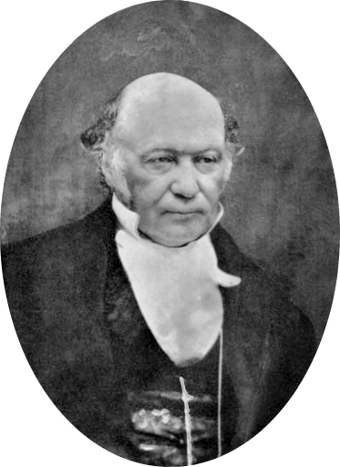

William Rowan Hamilton is acredited for being the pioneer of Quaternion math
Sir William Rowan Hamilton (4 August 1805 – 2 September 1865)was an Irish mathematician, physicist, and astronomer who made numerous major contributions to algebra, classical mechanics, and optics. His theoretical works and mathematical equations are considered fundamental to modern theoretical physics, particularly his reformulation of Lagrangian mechanics. His research included the analysis of geometrical optics, Fourier analysis, and quaternions, the last of which made him one of the founders of modern linear algebra.
Facts about his life: